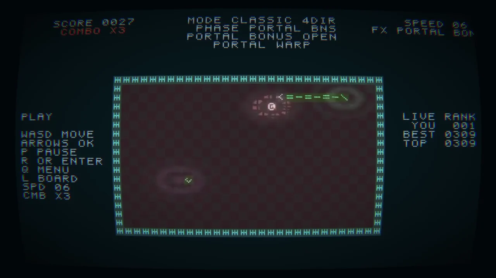

Digital artist & creative technologist
DATA
C0RE
Realtime audiovisual systems
code / light / space
Selected practice / 2016—2026scroll ↓
Practice
I build real-time audiovisual systems where sound, data and code become image, light and spatial behaviour.
The work moves between creative coding, live audiovisual performance, interactive light and media-system integration — from laptop-scale software to architectural installations and stage environments.
creative codinglive AVinteractive lightprojectionAnnecy / Geneva / Europe
Selected work
Systems, studies
and spatial work.
01
Snake / Networked Retro Systemsolo project / game logic / music sync / networked score
02ASCII / Pixel Realtime Studysolo study / image reduction / computational portrait
03LUMINA / Geneva Luxcollaborative installation / light / architecture / realtime control
04Realtime Studiessolo research / sound / motion / temporal image systems
05Hardwinner / Realtime AV Systemscollaborative systems / stage / LED / GLSL / show control

Current direction / 2027
Portable solo practice.
Software-first.
Festival-scale in sound, projection and space.
The next work is designed around a light touring footprint: a compact realtime core that can expand through the technical infrastructure available on site.